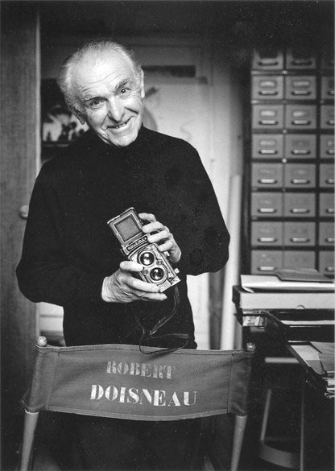

Your browser doesn't support the features required by impress.js, so you are presented with a simplified version of this presentation.
For the best experience please use the latest Chrome, Safari or Firefox browser.
Robert Doisneau (14 avril 1912 — 1 avril 1994) était un photographe français,
un maître de la photographie française humaniste.
Il est né le 14 avril 1912 à Gentilly, banlieue de Paris.
En 1926, il est entré dans une école d'art et de métiers.
En 1929 Duano s'est intéressé à la photographie
En 1934 il a commencé à travailler pour Renault
En1939 il est licencié.
Depuis ce moment-là, il a décidé d'être
un photographe indépendant
En 1949 Duano a signé un contrat avec Vogue,
en 1952 il a commencé sa carrière de photographe indépendant.
Le Baiser
de
l'hôtel de ville
Dans la deuxième moitié du XXe siècle, il est devenu
le maître de la photographiehumaniste.
sa façon particulière de dépeindre la vie de sa ville chérie
La culture de rue de l'enfance

Robert Doisneau est un photographe humaniste, ironique, observateur, lyrique et génial.